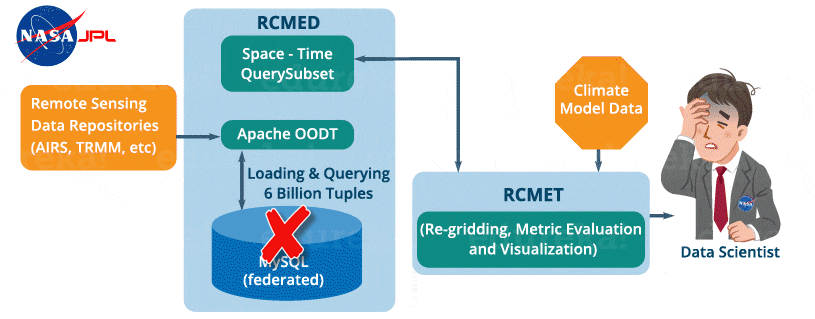

In this Hive tutorial blog, I am going to introduce you to Apache Hive which is a data warehousing tool in the Hadoop Ecosystem. It provides SQL like language to perform queries and analytics on Big Data. Today, many companies consider Apache Hive as a genuine option or standard to perform analytics on large data sets. Hive is not only a saviour for people from non-programming background, it also reduces the work of programmers who spend long hours writing MapReduce programs. And the best thing about Apache Hive that you will realize while going through this blog is that it is very easy to learn. So, let us move ahead in this Hive Tutorial where we will understand each aspect of Apache Hive in the following sequence:
Apache Hive is a data warehouse system built on top of Hadoop and is used for analyzing structured and semi-structured data. Hive abstracts the complexity of Hadoop MapReduce. Basically, it provides a mechanism to project structure onto the data and perform queries written in HQL (Hive Query Language) that are similar to SQL statements. Internally, these queries or HQL gets converted to map reduce jobs by the Hive compiler. Therefore, you don’t need to worry about writing complex MapReduce programs to process your data using Hadoop. It is targeted towards users who are comfortable with SQL. Apache Hive supports Data Definition Language (DDL), Data Manipulation Language (DML) and User Defined Functions (UDF).
SQL + Hadoop MapReduce = HiveQL
Fig: Hive Tutorial – Facebook use case
Before 2008, all the data processing infrastructure in Facebook was built around a data warehouse based on commercial RDBMS. These infrastructures were capable enough to suffice the needs of Facebook at that time. But, as the data started growing very fast, it became a huge challenge to manage and process this huge dataset. According to a Facebook article, the data scaled from a 15 TB data set in 2007 to a 2 PB data in 2009. Also, many Facebook products involve analysis of the data like Audience Insights, Facebook Lexicon, Facebook Ads, etc. So, they needed a scalable and economical solution to cope up with this very problem and, therefore started using the Hadoop framework.
But, as the data grew, the complexity of Map-Reduce codes grew proportionally. So, training people with a non-programming background to write MapReduce programs became difficult. Also, for performing simple analysis one has to write a hundred lines of MapReduce code. Since, SQL was widely used by engineers and analysts, including Facebook, therefore, putting SQL on the top of Hadoop seemed a logical way to make Hadoop accessible to users with SQL background.
Hence, the ability of SQL to suffice for most of the analytic requirements and the scalability of Hadoop gave birth to Apache Hive that allows to perform SQL like queries on the data present in HDFS. Later, the Hive project was open sourced in August’ 2008 by Facebook and is freely available as Apache Hive today.
Now, let us look at the features or advantages of Hive that makes it so popular.
Learn Hive From Industry Experts
Apache Hive takes advantage of both the worlds i.e. SQL Database System and Hadoop – MapReduce framework. Therefore, it is used by a vast multitude of companies. It is mostly used for data warehousing where you can perform analytics and data mining that does not require real time processing. Some of the fields where you can use Apache Hive are as follows:
As it is said, you can’t clap with one hand only i.e. You can’t solve every problem with a single tool. Therefore, you can couple Hive with other tools to use it in many other domains. For example, Tableau along with Apache Hive can be used for Data Visualization, Apache Tez integration with Hive will provide you real time processing capabilities, etc.
Moving ahead in this Apache Hive Tutorial blog, let us have a look at a case study of NASA where you will get to know how Hive solved the problem that NASA scientists were facing while performing evaluation of Climate Models.
A climate model is a mathematical representation of climate systems based on various factors that impacts the climate of the Earth. Basically, it describes the interaction of various drivers of climate like ocean, sun, atmosphere, etc. to provide an insight into the dynamics of the climate system. It is used to project climate conditions by simulating the climate changes based on factors that affect climate. NASA’s Jet Propulsion Laboratory has developed Regional Climate Model Evaluation System (RCMES) for analysis and evaluation of the climate output model against remote sensing data present in various external repositories.
The RCMES (Regional Climate Model Evaluation System) has two components:
It is a scalable cloud database that loads the remote sensing data and reanalysis data which are related to climate using extractors like Apache OODT extractors, Apache Tika, etc. Finally, it transforms the data as the data point model which is of the form (latitude, longitude, time, value, height) and stores it into My SQL database. The client can retrieve the data present in RCMED by performing Space/Time queries. The description of such queries is not relevant for us now.
It provides the user an ability to compare the reference data present in the RCMED with the climate model output data fetched from some other sources to perform different kinds of analysis and evaluation. You can refer to the image given below to understand the architecture of RCMES.

The reference data in the RCMED comes from satellite-based remote sensing, according to the different parameters required for climate model evaluation. For example – AIRS (Atmospheric Infrared Sounder) provide parameters like surface air temperature, temperature and Geopotential, TRMM (Tropical Rainfall Measurement Mission) provides monthly precipitation, etc.
So, they needed a scalable solution that can store and process this huge amount of data with SQL like querying capability. Finally, they decided to use Apache Hive to overcome the problems stated above.
Now, let’s see, what are those features that convinced NASA’s JPL team to include Apache Hive as an integral part in their solution strategy:
The following image explains the RCMES Architect with Apache Hive integration:

Fig: Hive Tutorial – RCMES Architecture with Apache Hive
The above image shows the deployment of apache hive in RCMES. Following steps were taken by the NASA team while deploying Apache Hive:
Finally, members of the Hive community came to the rescue and provided various insights to solve the issues with their current Hive implementations:
Finally, NASA was able to tune their Hive cluster up to their expectations by taking into account all the suggestions given by the Hive community members. And therefore, they were able to query billions of rows in just 15 seconds using the system configurations mentioned above.
Master Hive In Our Hadoop Course
Apache Hive Tutorial: Hive Architecture and its Components
The following image describes the Hive Architecture and the flow in which a query is submitted into Hive and finally processed using the MapReduce framework:

Fig: Hive Tutorial – Hive Architecture
As shown in the above image, the Hive Architecture can be categorized into the following components:
Now, let us explore the first two major components in the Hive Architecture:
1. Hive Clients:
Apache Hive supports different types of client applications for performing queries on the Hive. These clients can be categorized into three types:
2. Hive Services:
Hive provides many services as shown in the image above. Let us have a look at each of them:
Now, let us understand the different ways of implementing Hive metastore in the next section of this Hive Tutorial.
Metastore stores the meta data information using RDBMS and an open source ORM (Object Relational Model) layer called Data Nucleus which converts the object representation into relational schema and vice versa. The reason for choosing RDBMS instead of HDFS is to achieve low latency. We can implement metastore in following three configurations:

Both the metastore service and the Hive service runs in the same JVM by default using an embedded Derby Database instance where metadata is stored in the local disk. This is called embedded metastore configuration. In this case, only one user can connect to metastore database at a time. If you start a second instance of Hive driver, you will get an error. This is good for unit testing, but not for the practical solutions.

This configuration allows us to have multiple Hive sessions i.e. Multiple users can use the metastore database at the same time. This is achieved by using any JDBC compliant database like MySQL which runs in a separate JVM or a different machine than that of the Hive service and metastore service which are running in the same JVM as shown above. In general, the most popular choice is to implement a MySQL server as the metastore database.

In the remote metastore configuration, the metastore service runs on its own separate JVM and not inthe Hive service JVM. Other processes communicate with the metastore server using Thrift Network APIs. You can have one or more metastore servers in this case to provide more availability. The main advantage of using remote metastore is you do not need to share JDBC login credential with each Hive user to access the metastore database.
Data in Hive can be categorized into three types on the granular level:
Tables in Hive are the same as the tables present in a Relational Database. You can perform filter, project, join and union operations on them. There are two types of tables in Hive:
Command:
CREATE TABLE <table_name> (column1 data_type, column2 data_type);
LOAD DATA INPATH <HDFS_file_location> INTO table managed_table;
As the name suggests (managed table), Hive is responsible for managing the data of a managed table. In other words, what I meant by saying, “Hive manages the data”, is that if you load the data from a file present in HDFS into a Hive Managed Table and issue a DROP command on it, the table along with its metadata will be deleted. So, the data belonging to the dropped managed_table no longer exist anywhere in HDFS and you can’t retrieve it by any means. Basically, you are moving the data when you issue the LOAD command from the HDFS file location to the Hive warehouse directory.
Note: The default path of the warehouse directory is set to/user/hive/warehouse. The data of a Hive table resides in warehouse_directory/table_name (HDFS). You can also specify the path of the warehouse directory in the hive.metastore.warehouse.dir configuration parameter present in the hive-site.xml.
Command:
CREATE EXTERNAL TABLE <table_name> (column1 data_type, column2 data_type) LOCATION ‘<table_hive_location>’;
LOAD DATA INPATH ‘<HDFS_file_location>’ INTO TABLE <table_name>;
For external table, Hive is not responsible for managing the data. In this case, when you issue the LOAD command, Hive moves the data into its warehouse directory. Then, Hive creates the metadata information for the external table. Now, if you issue a DROP command on the external table, only metadata information regarding the external table will be deleted. Therefore, you can still retrive the data of that very external table from the warehouse directory using HDFS commands.
Command:
CREATE TABLE table_name (column1 data_type, column2 data_type) PARTITIONED BY (partition1 data_type, partition2 data_type,….);
Hive organizes tables into partitions for grouping similar type of data together based on a column or partition key. Each Table can have one or more partition keys to identify a particular partition. This allows us to have a faster query on slices of the data.
Note: Remember, the most common mistake made while creating partitions is to specify an existing column name as a partition column. While doing so, you will receive an error – “Error in semantic analysis: Column repeated in partitioning columns”.
Let us understand partition by taking an example where I have a table student_details containing the student information of some engineering college like student_id, name, department, year, etc. Now, if I perform partitioning based on department column, the information of all the students belonging to a particular department will be stored together in that very partition. Physically, a partition is nothing but a sub-directory in the table directory.
Let’s say we have data for three departments in our student_details table – CSE, ECE and Civil. Therefore, we will have three partitions in total for each of the departments as shown in the image below. And, for each department we will have all the data regarding that very department residing in a separate sub – directory under the Hive table directory. For example, all the student data regarding CSE departments will be stored in user/hive/warehouse/student_details/dept.=CSE. So, the queries regarding CSE students would only have to look through the data present in the CSE partition. This makes partitioning very useful as it reduces the query latency by scanning only relevant partitioned data instead of the whole data set. In fact, in real world implementations, you will be dealing with hundreds of TBs of data. So, imagine scanning this huge amount of data for some query where 95% data scanned by you was un-relevant to your query.
I would suggest you to go through the blog on Hive commands where you will find different ways of implementing partitions with an example.

Commands:
CREATE TABLE table_name PARTITIONED BY (partition1 data_type, partition2 data_type,….) CLUSTERED BY (column_name1, column_name2, …) SORTED BY (column_name [ASC|DESC], …)] INTO num_buckets BUCKETS;
Now, you may divide each partition or the unpartitioned table into Buckets based on the hash function of a column in the table. Actually, each bucket is just a file in the partition directory or the table directory (unpartitioned table). Therefore, if you have chosen to divide the partitions into n buckets, you will have n files in each of your partition directory. For example, you can see the above image where we have bucketed each partition into 2 buckets. So, each partition, say CSE, will have two files where each of them will be storing the CSE student’s data.
Well, Hive determines the bucket number for a row by using the formula: hash_function (bucketing_column) modulo (num_of_buckets). Here, hash_function depends on the column data type. For example, if you are bucketing the table on the basis of some column, let’s say user_id, of INT datatype, the hash_function will be – hash_function (user_id)= integer value of user_id. And, suppose you have created two buckets, then Hive will determine the rows going to bucket 1 in each partition by calculating: (value of user_id) modulo (2). Therefore, in this case, rows having user_id ending with an even integer digit will reside in a same bucket corresponding to each partition. The hash_function for other data types is a bit complex to calculate and in fact, for a string it is not even humanly recognizable.
Note: If you are using Apache Hive 0.x or 1.x, you have to issue command – set hive.enforce.bucketing = true; from your Hive terminal before performing bucketing. This will allow you to have the correct number of reducer while using cluster by clause for bucketing a column. In case you have not done it, you may find the number of files that has been generated in your table directory are not equal to the number of buckets. As an alternative, you may also set the number of reducer equal to the number of buckets by using set mapred.reduce.task = num_bucket.
There are two main reasons for performing bucketing to a partition:
I would like to conclude this Hive tutorial blog here. I am pretty sure after going through this Hive tutorial blog, you would have realized the simplicity of Apache Hive. Since, you guys have learned all the Hive fundamentals, it is high time to have some hands on experience with Apache Hive. So, check out the next blog in this Hive Tutorial blog series which is on Hive installation and start working on Apache Hive.
Now that you have understood Apache Hive and its features, check out the Hadoop training by Edureka, a trusted online learning company with a network of more than 250,000 satisfied learners spread across the globe. The Edureka Big Data Hadoop Certification Training course helps learners become expert in HDFS, Yarn, MapReduce, Pig, Hive, HBase, Oozie, Flume and Sqoop using real-time use cases on Retail, Social Media, Aviation, Tourism, Finance domain.
Got a question for us? Please mention it in the comments section and we will get back to you.

 1-800-275-9730 (Toll Free)
1-800-275-9730 (Toll Free)  +91 88808 62004
+91 88808 62004